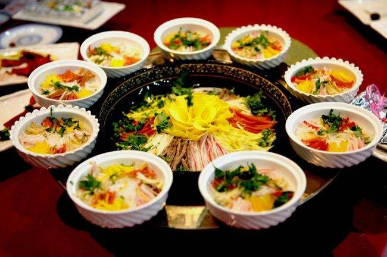
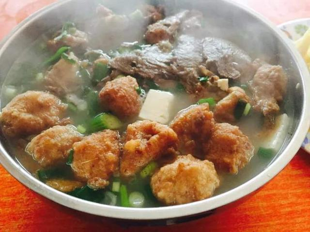
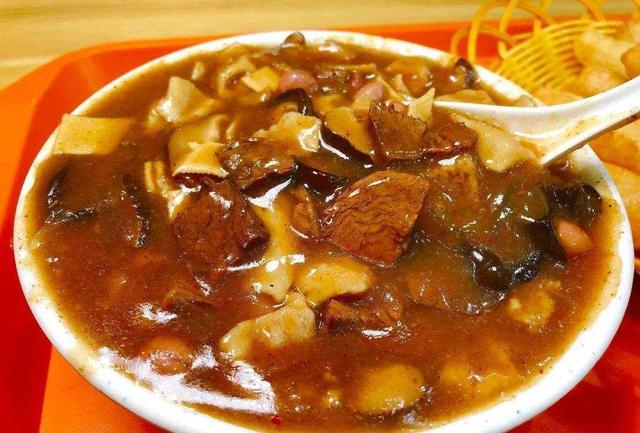
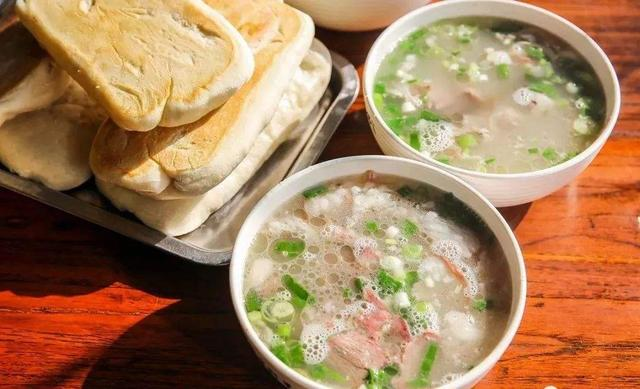
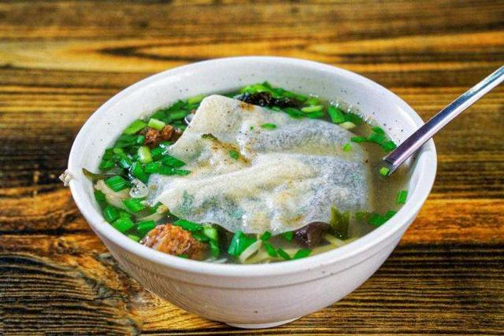

洛阳水席
洛阳水席，是河南洛阳一带特色传统名宴，属于豫菜系。洛阳水席始于唐代，已有1000多年的历史，是中国迄今保留下来的历史最久远的名宴之一。
洛阳水席有两个含义：一是全部热菜皆有汤－汤汤水水；二是热菜洛阳水席吃完一道，撤后再上一道，像流水一样不断地更新。 洛阳水席的特点是有荤有素、选料广泛、可简可繁、味道多样，酸、辣、甜、咸俱全，舒适可口。 2018年9月10日，“中国菜”正式发布，“洛阳水席“被评为“中国菜”河南十大主题名宴
缘由
水席起源于洛阳，这与其地理气候有直接关系。洛阳四面环山，雨少而干燥。古时天气寒冷，不产水果，因此民间膳食多用汤类，喜欢酸辣以抵御干燥寒冷。这里的人们习惯使用当地出产 的淀粉、莲菜、山药、萝卜、白菜等制作经济实惠、汤水丰盛的 宴席，就连王公贵戚也习惯把主副食品放在一起烹制，久而久之 逐步创造出了极富地方特色的洛阳水席，并逐渐形成“酸辣味殊，清爽利口”的风味。
水席含义
所谓"水席"有两个含义：一是全部热菜皆有汤－汤汤水水；二是热菜吃完一道，撤后再上一道，像流水一样不断地更新。洛阳人把水席看成是各种宴席中的上席，以此来款待远方来客。它不仅是盛大宴会中倍受欢迎的席面，就是平时民间婚丧嫁娶、诞辰寿日、年节喜庆等礼仪场合，人们也惯用水席招待至亲好友，人们亲切地称它为“三八桌”。它作为传统的饮食风格，和传统的牡丹花会、古老的龙门石窟，并称为洛阳三绝，被誉为古都洛阳的三大异风，成为洛阳人的骄傲。
水席八品
全席共设24道菜，包括8个冷盘、4个大件、8个中件、 4个压桌菜，冷热、荤素、甜咸、酸辣兼而有之。上菜顺序极为考究，先上8个冷盘作为下酒菜，每碟是荤素三拼，一共16样；待客人酒过三巡再上热菜：首先上4大件热菜，每上一道跟上两道中件（也叫陪衬菜或调味菜），美其名曰"带子上朝"；最后上4道压桌菜，其中有一道鸡蛋汤，又称送客汤，以示全席已经上满。热菜上桌必以汤水佐味，鸡鸭鱼肉、鲜货、菌类、 时蔬无不入馔，丝、片、条、块、丁，煎炒烹炸烧，变化无穷。不过，在民间的水席做法仍然有很多种，比如有的最后一道菜是八宝。历史悠久。
在水席上，爱吃冷食的人可以找到适合自己的凉菜，爱吃酸辣菜的人，水席菜能让你辣的冒汗，酸的生津。有人喜食甜食，第四组菜足以让人吃得可口。水席独到之处是汤水多，赴宴人菜汤交替食用，能使人感到肠胃舒适，菜虽多胃口不腻。看到鸡蛋汤上桌，了解当地风俗的人都知道，24道菜已全部上完，这碗送客汤说明水席到了尾声，宾主皆大欢喜，纷纷起身离席。
有人说洛阳水席的汤，就像一段舒缓有致的音乐，开始时味道淡淡的，然后加进点麻辣，再加糖变成甜咸味，再来醋的酸……几碗之后只能用“爽快”来形容。
洛阳水席以其独特的风味、精湛的技艺、逼真的造型、美好的传说、渊源的文化积淀而引起轰动，被称作有洛阳古都地方特色的一朵奇葩。
洛阳汤
胡辣汤、牛肉汤、羊肉汤、驴肉汤、鸡汤、豆腐汤、丸子汤、不翻汤,一天一种，一周不重样。这一碗汤，包含了十三个朝代更迭的苦难，更有洛阳人处世哲学
   Copyright ©2021 21级软件9班 任浩毅 All Rights Reserved.